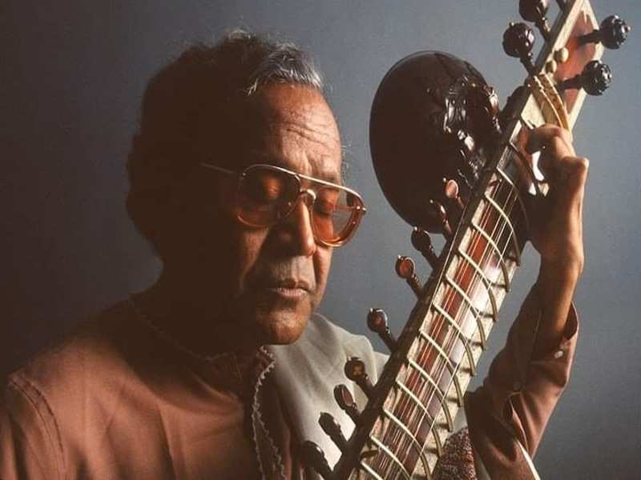

Welcome to the World of Bishnupur Music
Discover the rich heritage and melodious tunes of Bishnupur Music, a classical genre from West Bengal, India.
History of Bishnupur Music
Bishnupur Music traces its roots to the ancient Dhrupad style of Hindustani classical music. It flourished under the patronage of the Malla kings of Bishnupur, who were great connoisseurs of art and culture.
The genre evolved through centuries, blending local folk traditions with classical elements. The maestros of Bishnupur added their unique touch, making it distinct from other styles.
Several musicians have significantly contributed to Bishnupur Music. Notable among them are Pandit Radhika Prasad Goswami and Pandit Ramshankar Bhattacharya, who popularized the genre in the 20th century.